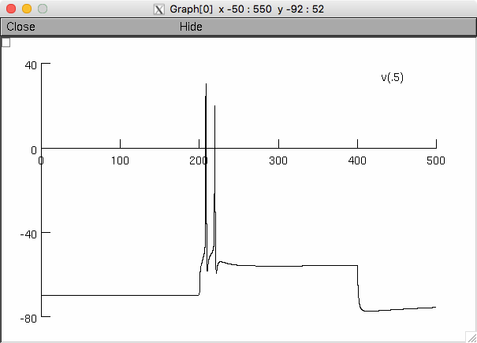

The NEURON model code associated with the paper: Meuth P, Meuth SG, Jacobi D, Broicher T, Pape HC, Budde T (2005) Get the Rhythm: Modeling Neuronal Activity Journal of Undergraduate Neuroscience Education (JUNE) 4(1):A1-A11 used to be available at the supplementary material links here: http://www.patrick-meuth.de/pub.html however they are now being made available in this archive along with a copy of the pub.html To run the model, download and extract this archive. Compile the mod files in the folder that you would like to run and start by using either the mosinit.hoc file or the instructions in the appendix in the paper. Also, for additional help see https://senselab.med.yale.edu/ModelDB/NEURON_DwnldGuide.cshtml If you autolaunch from ModelDB (which runs the Neuron.hoc in folder 4) you can change the current to 3.2: and then pressing Init&Run will display a figure similar to Fig 4A in the paper: 